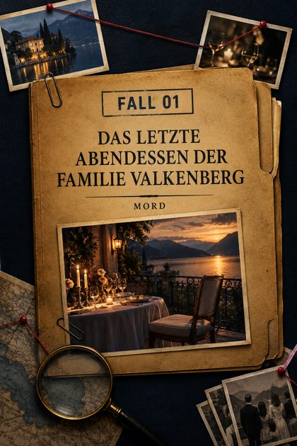
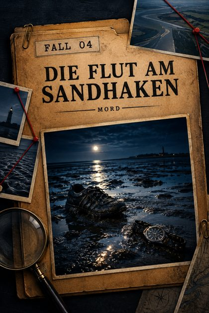
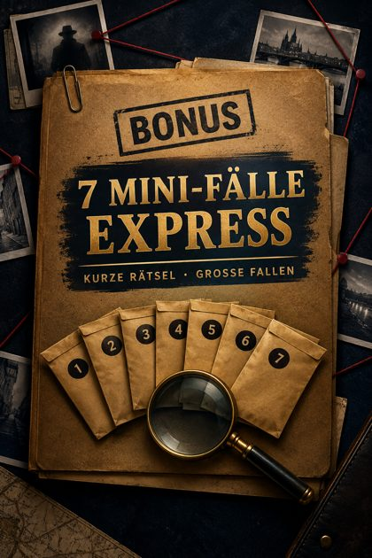

🗂️ Komplettpaket
Alle 4 Fälle + 7 Mini-Fälle in einer Datei · 151 Seiten · PDF 35 MB
Oder wähle einen Fall

Fall 1 · MordDas letzte Abendessen der Familie Valkenberg
33 Seiten · PDF 7.6 MB
Fall 2 · SerienmörderDer Kreis von St. Barbara
35 Seiten · PDF 8.2 MB
Fall 3 · VerschwindenDas Haus Brandt
32 Seiten · PDF 7.0 MB

Fall 4 · MordDie Flut am Sandhaken
30 Seiten · PDF 7.2 MB

Bonus · Kurze Rätsel7 Mini-Fälle Express
21 Seiten · PDF 5.2 MB
So legst du los
- Wähle einen Fall – für den Einstieg empfehlen wir Fall 3 „Das Haus Brandt“.
- Lies die Einsatzbesprechung und die Spielanleitung.
- Geht alle Dokumente durch, vergleicht Aussagen und notiert Widersprüche.
- Beantworte die Leitfragen und schlage erst dann die Lösung auf.
Wenn der Download nicht startet, tippe auf „Öffnen“ und speichere die Datei im Browser. Alle Geschichten sind frei erfunden.